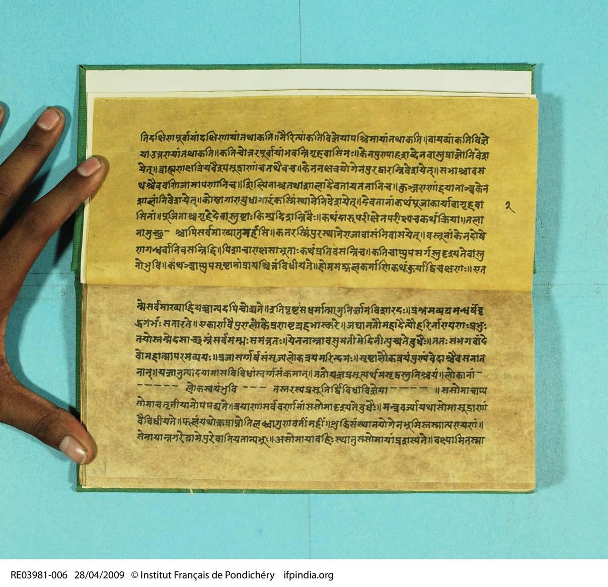
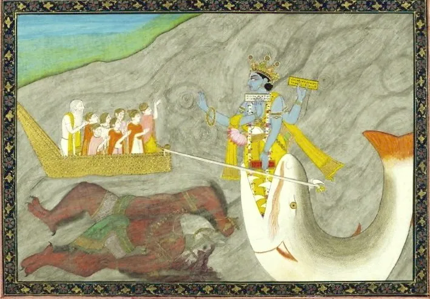
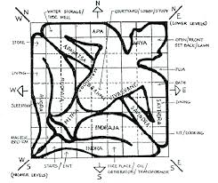
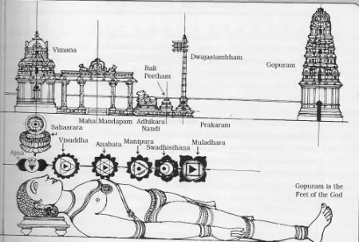
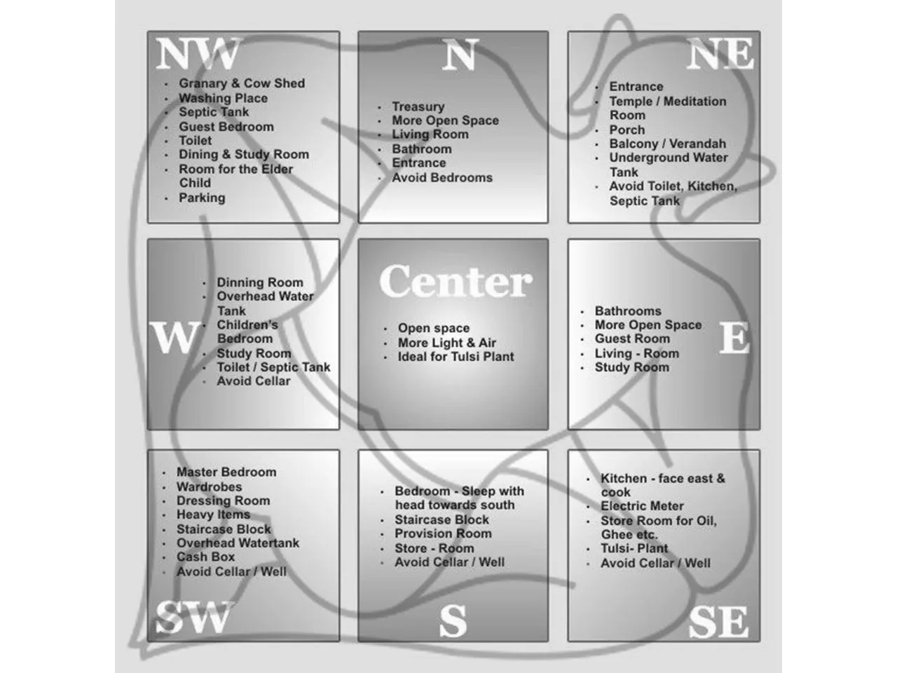
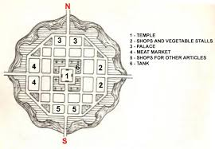
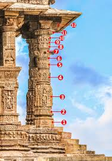
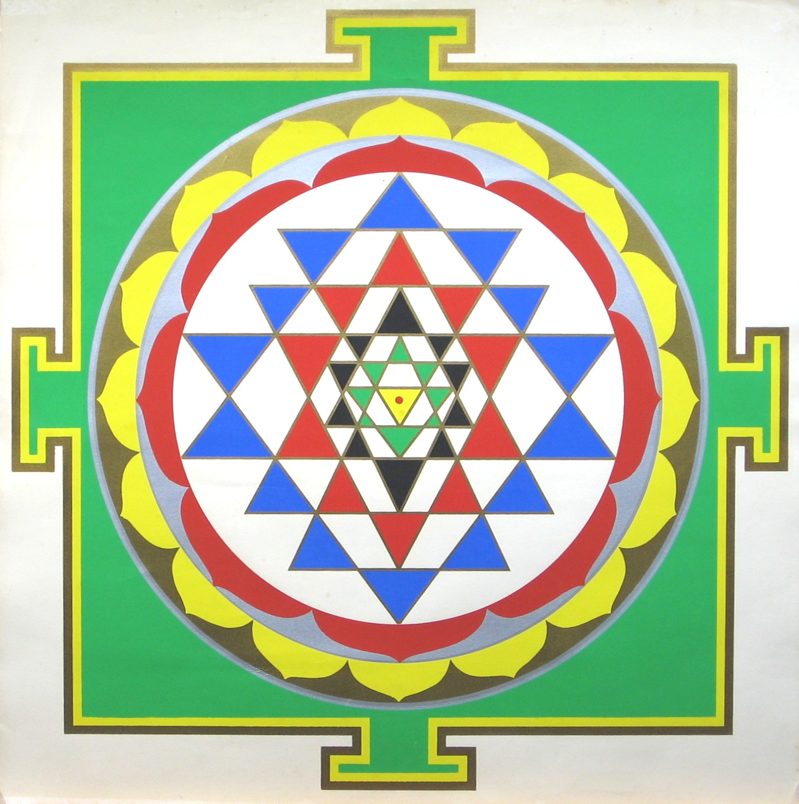
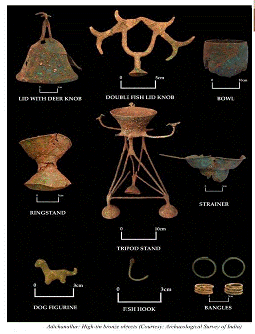

The Chatushashti Kalas
The Chatushashti Kalas — the 64 Arts — represent a comprehensive collection of skills and knowledge essential for holistic human development in ancient India. Originating from Vedic texts and first cataloged in the Mahabharata, these arts were later refined in works like Kautilya's Arthashastra and the Kamasutra.
Mastery of these arts allowed an individual to contribute to society while developing intelligence, creativity, and discipline. Among these, Vastuvidyā — the Art and Science of Architecture — stands as a profound fusion of mathematical precision, artistic expression, and astrological insights.
The term Vastu refers broadly to houses, buildings, grounds, and even infrastructure like bridges and lakes, while later Puranic texts extend it to encompass entire towns, temples, and palaces.


Sacred Origins
According to the Matsya Purana, Vastuvidyā was imparted by Lord Vishnu in his Matsya avatar to Manu, the first human — establishing architecture as a divine gift entrusted to humanity.
The tradition is preserved in major texts such as the Manasara, which provides detailed guidance on site selection, strategic placement of features like doors and altars, and construction techniques to promote the well-being of occupants.
This sacred lineage of knowledge passed from divine origin through generations of Sthapatis — master architects — who were regarded not merely as craftsmen, but as intermediaries between the cosmic order and the material world.
"Architecture is not merely a technical activity but a righteous and purposeful design that serves society while reflecting cosmic order." — Vastuvidyā, The Samanvaya Tradition
Harmonizing with the Cosmos
At its heart, Vastuvidyā is the science of achieving harmony between human existence and the larger cosmos.

Every structure is designed to balance the five essential elements: Earth (Prithvi), Water (Jala), Air (Vayu), Fire (Agni), and Space (Akasha). This balance aligns the building with nature to optimize the health of its residents.
This fundamental sacred grid maps a cosmic being onto the site. A key rule is the Brahmasthana — the central zone of the structure — which is kept open to allow energy and Space (Akasha) to circulate freely.
Eight directions govern different functions. The East is traditionally auspicious for entrances to capture sunrise and vitality, while the Southeast is the designated zone for Fire — the domain of kitchens and hearths.
From Temples to Towns
Vastuvidyā was applied across various scales, from individual homes to entire urban landscapes.
Temple Architecture
The highest expression of the art, temples utilized intricate carvings that served both aesthetic and scientific purposes, such as amplifying sound within the sanctum. Every dimension, every column, every doorway threshold was governed by sacred proportion.
The towering Shikhara and Vimana spires above the sanctum represent the soul's aspiration toward the divine — a mountain of stone reaching heavenward, echoing the sacred peaks of Meru.


Residential Design
Traditional homes were designed to optimize natural light and ventilation, emphasizing symmetry and proportion. The central courtyard — the Brahmasthana of the home — served as both spiritual center and ventilation engine.
Every doorway faced an auspicious direction; the kitchen was placed southeast in honor of Agni; sleeping chambers aligned with the earth's magnetic flow. Architecture was an act of living liturgy.
Town Planning
The practice extended to advanced urban systems. Archaeological evidence from sites like Mohenjo-Daro and Dwaraka showcases early expertise in water systems, storage facilities, and landscaped gardens — some of the most sophisticated city planning of the ancient world.
Grid-based street layouts, covered drainage, public granaries, and tiered social zones were all governed by Vastu principles applied at urban scale.

The Language of Sacred Form


The towering spires above the sanctum, representing the soul's aspiration toward the divine — architectural mountains of stone echoing Mount Meru.
Structural and decorative pillars that created rhythmic spaces for worship, each carved with narrative friezes and divine imagery serving both function and scripture.
The Art of Invention of Machines, including Udakayantra (water mechanisms) for irrigation or moats, and specialized instruments for precise architectural measurement.
The Sthapati & Mastery of Materials
Construction was carried out by the Sthapati — Master Architect — and specialized guilds like the Takshaka (stone carvers or carpenters). These were not mere laborers but initiated scholars, equally versed in sacred scripture and material science.
They commanded multiple Kalas — arts — in their simultaneous practice, weaving metallurgy, stone-carving, and clay-work into a single unified vision of sacred space.
-
FeLohakriyā & Dhātuvādaḥलोहक्रिया & धातुवादः
Working with metals and metallurgy to create structural reinforcements and ritualistic bronze objects — bells, lamps, and divine icons that animated the sacred space.
-
⛏Aśmakriyāअश्मक्रिया
The meticulous art of stone sculpting — chiseling divine narrative onto granite and sandstone with instruments guided by sacred proportion and devoted intention.
-
🏺Mrtkriyāमृत्क्रिया
The use of clay, which revolutionized construction through the invention of clay tiles and fired bricks — used for buildings, dams, and drainage systems of extraordinary sophistication.

The Teaching of Samanvaya
Vastuvidyā remains relevant today as a testament to India's quest for Samanvaya — harmony. It teaches that architecture is not merely a technical activity but a righteous (Dharma) and purposeful design that serves society while reflecting cosmic order.
The five elements, the sacred grid, the directional deities, the master craftsmen — all converge in a single truth: that every structure built by human hands is a participation in the ongoing creation of the universe, a collaboration between the mortal architect and the immortal cosmos.
In the age of glass and steel, Vastuvidyā endures as a reminder that the deepest human spaces are those built not merely for shelter, but for the soul's flourishing.